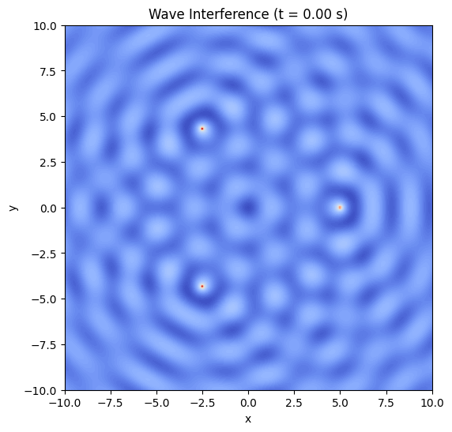
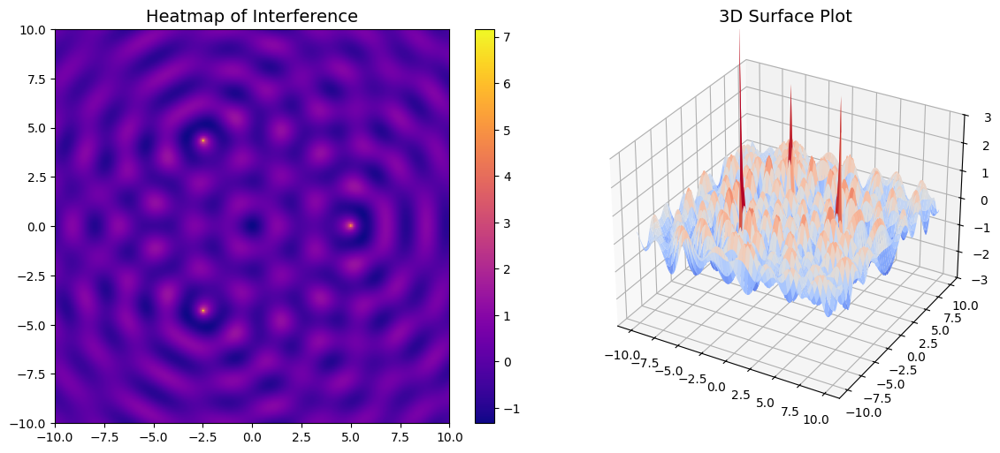
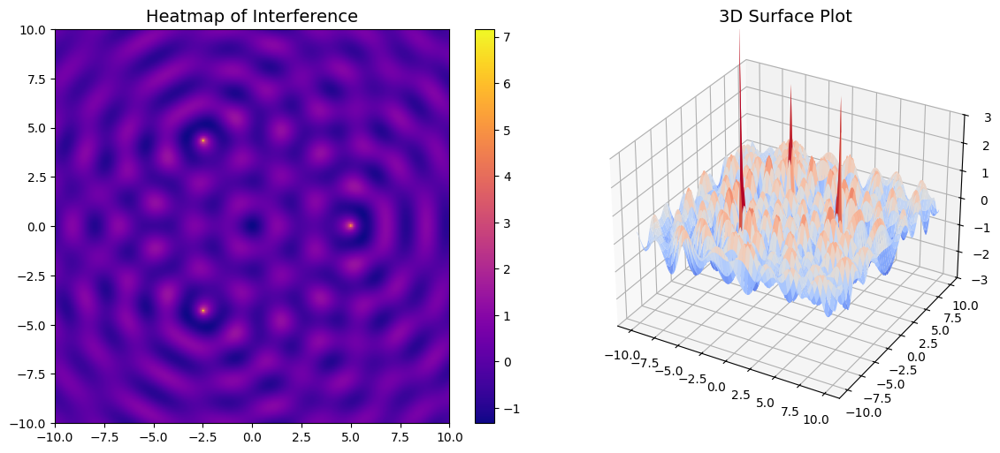

Problem 1
Wave Interference Simulation on a Water Surface
Objective
This project aims to simulate and visualize the interference patterns produced by waves emitted from point sources arranged in the shape of a regular polygon (triangle, square, pentagon, etc.) on a 2D water surface. By applying the principle of superposition, we can analyze how waves interact — constructively or destructively — over time and space.
Theoretical Background
1. Single Point Source Wave
A circular wave originating from a point source \((x_0, y_0)\) on a 2D water surface can be described by the following formula:
Where:
- \(\eta(x, y, t)\): vertical displacement of the surface
- \(A\): amplitude of the wave
- \(r = \sqrt{(x - x_0)^2 + (y - y_0)^2}\): distance from the source
- \(k = \frac{2\pi}{\lambda}\): wave number
- \(\omega = 2\pi f\): angular frequency
- \(\phi\): initial phase of the wave
2. Superposition Principle
When multiple waves interact, the resulting displacement is the sum of individual displacements:
Where \(N\) is the number of wave sources (i.e., vertices of the polygon).
Simulation in Python (Google Colab)
Requirements
Run this code in Google Colab. It uses numpy, matplotlib, and Pillow.
# Install required packages (if not already installed)
!pip install pillow
Full Python Code
import numpy as np
import matplotlib.pyplot as plt
from matplotlib import animation
# === WAVE PARAMETERS ===
A = 1.0 # Amplitude
wavelength = 2.0 # Wavelength (lambda)
k = 2 * np.pi / wavelength # Wave number
f = 1.0 # Frequency
omega = 2 * np.pi * f # Angular frequency
phi = 0.0 # Initial phase
# === GEOMETRIC PARAMETERS ===
polygon_sides = 3 # Choose 3 (triangle), 4 (square), 5 (pentagon), etc.
radius = 5 # Radius of polygon
# === SIMULATION GRID ===
x = np.linspace(-10, 10, 300)
y = np.linspace(-10, 10, 300)
X, Y = np.meshgrid(x, y)
# === TIME FRAMES FOR ANIMATION ===
frames = 60
t_vals = np.linspace(0, 2 * np.pi / omega, frames)
# === SOURCE LOCATIONS ===
angles = np.linspace(0, 2 * np.pi, polygon_sides, endpoint=False)
source_positions = [(radius * np.cos(a), radius * np.sin(a)) for a in angles]
# === PLOT SETUP ===
fig, ax = plt.subplots(figsize=(6, 6))
def update(frame):
t = t_vals[frame]
eta_total = np.zeros_like(X)
for (x0, y0) in source_positions:
r = np.sqrt((X - x0)**2 + (Y - y0)**2)
eta = A / np.sqrt(r + 1e-6) * np.cos(k * r - omega * t + phi)
eta_total += eta
ax.clear()
ax.set_title(f"Wave Interference (t = {t:.2f} s)")
ax.set_xlabel("x")
ax.set_ylabel("y")
return ax.contourf(X, Y, eta_total, levels=100, cmap='coolwarm')
ani = animation.FuncAnimation(fig, update, frames=frames, blit=False)
# Save the animation
ani.save("wave_interference.gif", writer="pillow", fps=10)

 

Results and Discussion
The simulation above produces an animated heatmap showing the wave interference patterns.
Key Observations:
- Constructive interference: Occurs where wave crests meet crests or troughs meet troughs → bright areas.
- Destructive interference: Occurs where crests meet troughs → dark or flat zones.
- The symmetry of the polygon directly influences the shape of the interference pattern.
- As time evolves, the wave pattern dynamically shifts but preserves its symmetry due to coherence.
Conclusion
Through this simulation, we gained a visual and intuitive understanding of how coherent wave sources interact via superposition. This forms the basis for important physical phenomena like:
- Diffraction patterns
- Sound wave interference
- Light wave behavior in optics
- Quantum wave functions